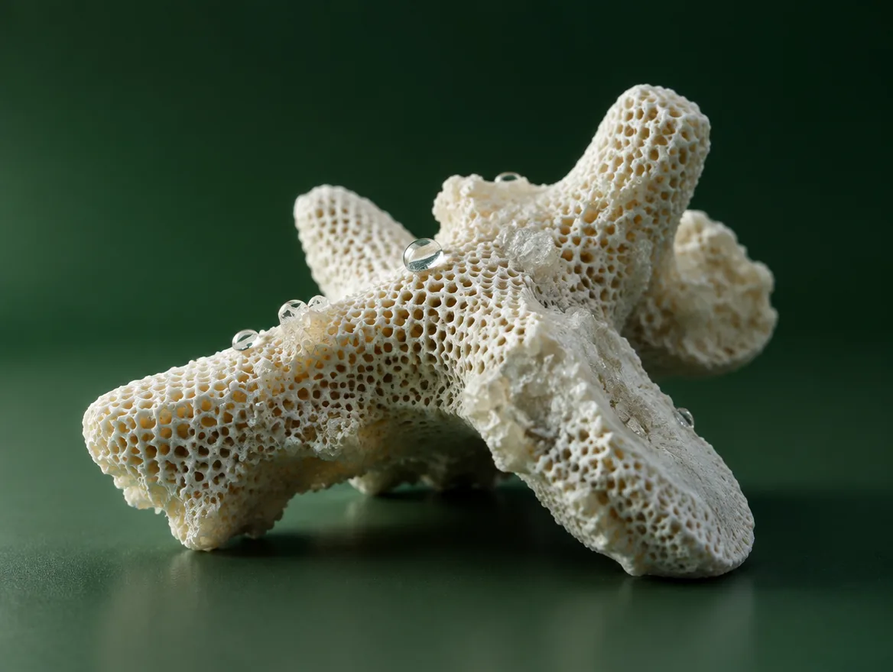
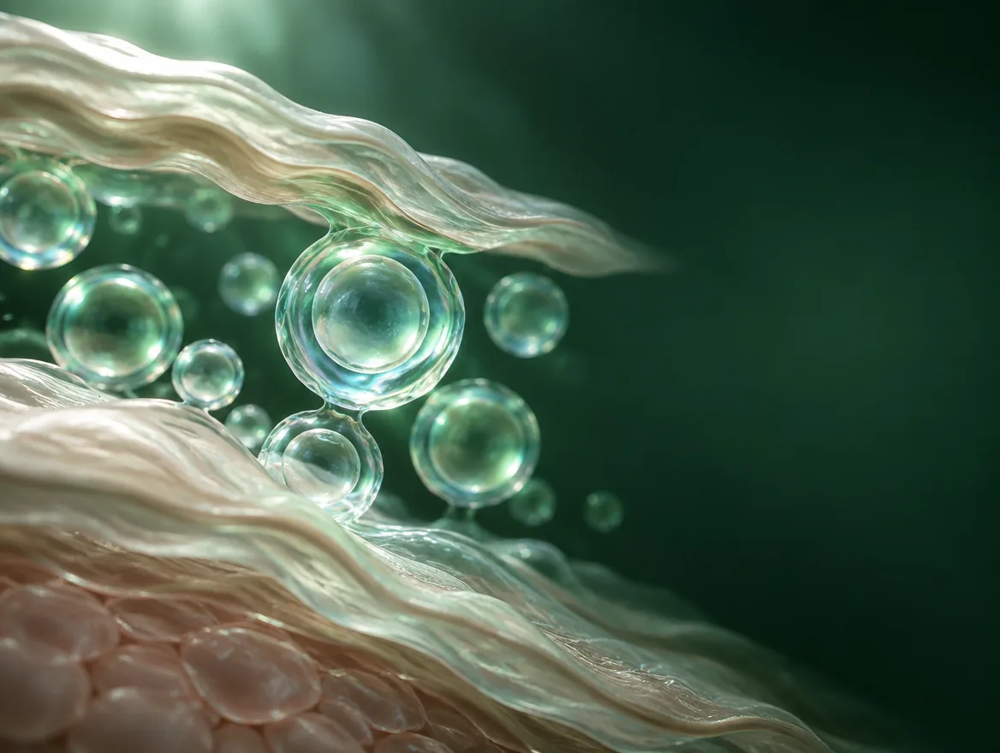
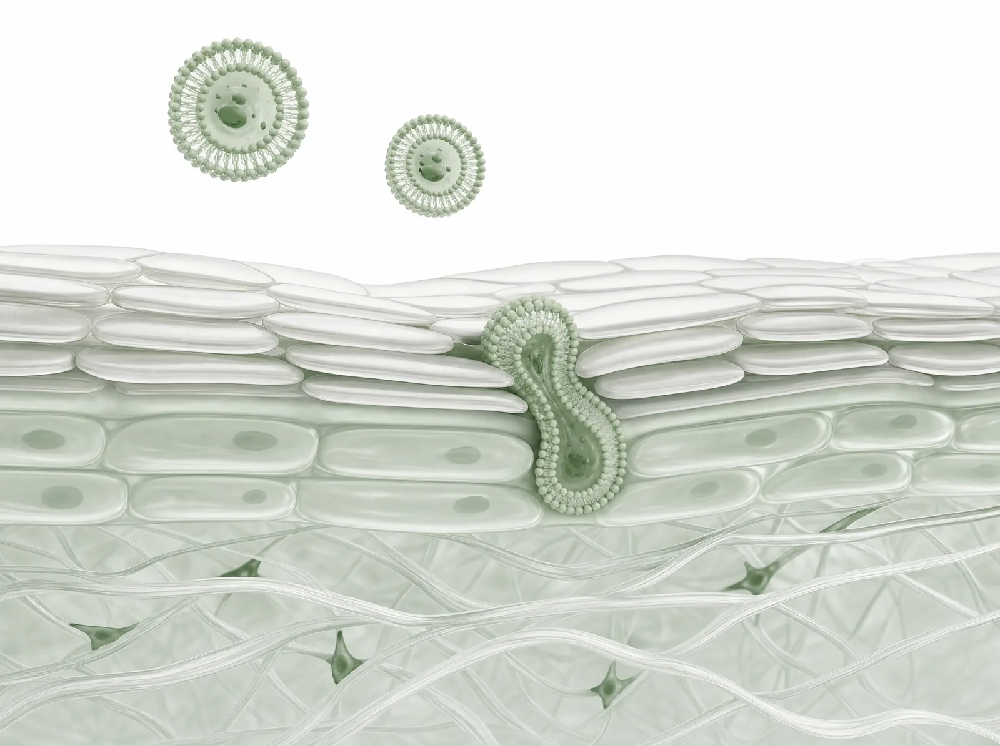
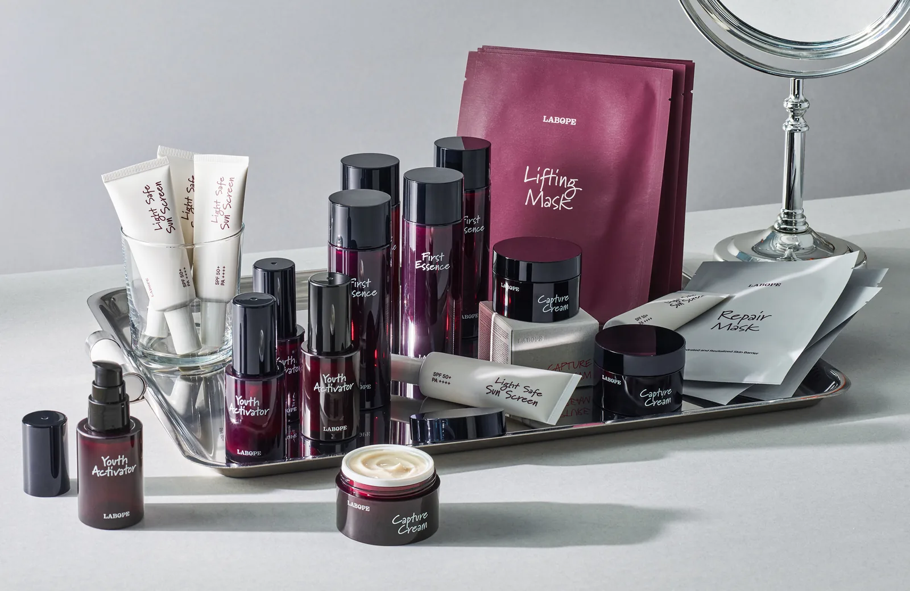
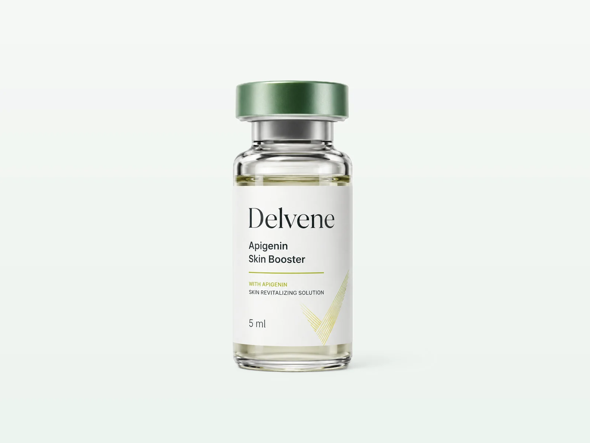
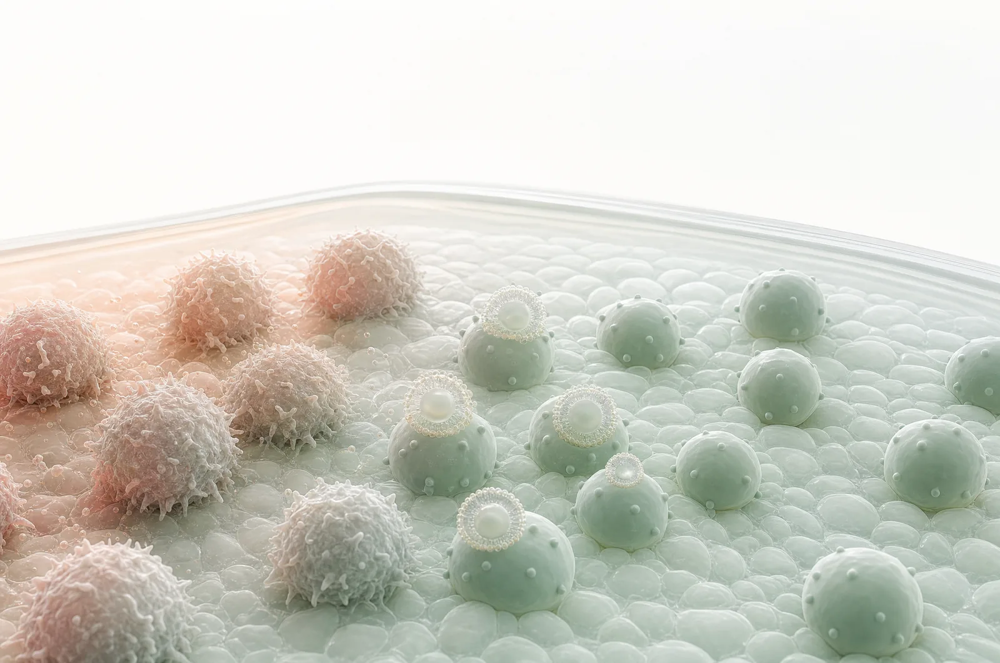
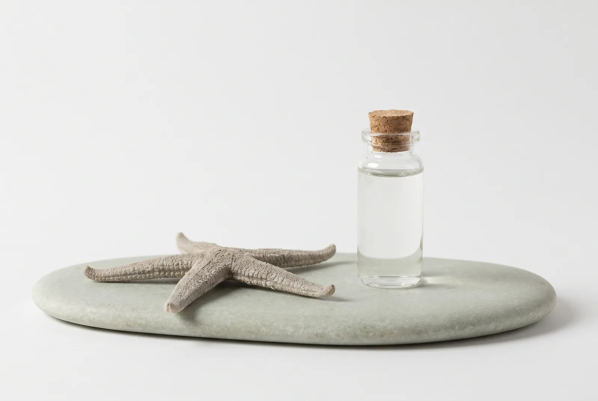

피부 속, 필요한 세포까지 전달합니다.
스타스테크 바이오사이언스는 피부 장벽을 지나 진피까지 유효성분을 전달하는 기술 TDS 와, 원하는 세포에 선택적으로 닿는 표적 전달 기술 T-TDS 를 개발합니다. 화장품 원료에서 병의원 스킨부스터, 신약 파이프라인까지 하나의 전달 플랫폼 위에서 사업을 넓혀 가고 있습니다.
균형을 회복하는 기술,
두 개의 축
회사 자세히
스타스테크는 기존 해법이 흔들어 놓은 화학 · 생물 시스템의 균형을 회복하는 기술로 지속가능한 돌파구를 만듭니다. Chemical Solutions 와 Bio Solutions 두 축을 함께 운영하며, 이 사이트는 그중 Bio Solutions 를 소개합니다.

AI 생성 렌더링화학 시스템의 균형
해양 · 농업 · 산업 부산물을 친환경 제설제, 비료, 수처리제로 다시 씁니다. 자원순환에서 시작한 스타스테크의 첫 축입니다.
기업 홈페이지에서 보기
AI 생성 렌더링생물 시스템의 균형
유효성분이 필요한 세포에만 닿도록 설계해, 시스템 전체를 흔들지 않고 문제를 푸는 것이 저희의 방식입니다. 피부 전달 플랫폼 TDS · T-TDS 위에서 화장품 원료, 병의원 스킨부스터, 신약 파이프라인을 키우고 있습니다.
기술 자세히Restoring intrinsic balance.
Recovering optimal function.
Delivering sustainable breakthroughs.스타스테크의 철학 — Restore Balance, Advance Life
하나의 플랫폼,
두 단계의 전달 기술
기술 자세히
TDS 는 유효성분을 피부 장벽 너머 진피까지 데려가고, T-TDS 는 그 위에 표적 기능을 더해 필요한 세포에만 닿게 합니다. 화장품에서 검증한 전달체를 그대로 이어받아 의약품까지 확장하는 것이 저희의 방식입니다.

각질층을 지나, 필요한 세포까지
기술이 제품이 되는
세 영역
사업 자세히
이미 시장에 있는 화장품 원료와 브랜드, 병의원과 함께 준비하는 스킨부스터, 그리고 신약 파이프라인. 모두 같은 전달 기술에서 출발합니다.

Penellagen® · LABOPE
불가사리 콜라겐 펩타이드를 피부 깊이 전달하는 화장품 원료 Penellagen® 과, 이를 담은 스킨케어 브랜드 LABOPE. 국내와 중국에서 판매하고 있습니다.
자세히 보기
Delvene®
스킨부스터 시술과 함께 쓰는 병의원 전용 부스터입니다. T-TDS 로 설계한 첫 제품으로, 시술 전후 피부 컨디션 관리와 민감한 피부의 데일리 케어를 위해 준비하고 있습니다.
자세히 보기
신약 파이프라인
T-TDS 로 염증성 피부질환을 겨냥한 비스테로이드 국소 치료제를 개발합니다. 리드 프로그램인 건선 치료제는 비임상 단계이며 IND 를 제출하지 않았습니다.
자세히 보기파이프라인
연구개발 자세히플랫폼 위에서 진행 중인 프로그램과 현재 단계입니다.1
01상용화 제품 · 신약 파이프라인
02전달체 플랫폼
03유효성분(API)
개발 단계의 프로그램 4건(국소 염증성 · 노화 관련 질환 치료제, 근세포 · 모낭세포 표적 T-TDS)은 연구개발 페이지에서 확인할 수 있습니다.
- 1)단계 표기는 2026년 9월 기준 사내 개발 현황이며, 규제기관의 승인 · 심사 단계를 의미하지 않습니다. 국소 건선 치료제는 IND 를 제출하지 않은 비임상 단계로, 비임상 패키지를 갖춰 IND 신청을 준비하고 있습니다. "국책과제"는 2026년도 해양수산 글로벌 딥테크 발굴 기술개발 사업(해양생물 유래 PDRN · 섬유아세포 표적 T-TDS)을 가리킵니다.
해양에서 시작한
바이오텍
회사 자세히

불가사리에서 전달 플랫폼까지
스타스테크는 2017년 불가사리로 만든 친환경 제설제로 출발했습니다. 그 과정에서 얻은 불가사리 콜라겐을 피부 깊이 전달하기 위해 자체 전달체를 개발했고, 여기에 표적 기능을 더한 T-TDS 플랫폼이 지금의 바이오 사업을 이끌고 있습니다.
- 2)회사 지표는 전사 기준이며 바이오 부문 단독 수치가 아닙니다. 회계기준(연결 / 별도) 및 감사보고서 대조가 필요합니다.
함께 만들 수 있는 것
파트너링 자세히라이선스 아웃, 공동 연구개발, 병의원 채널, 원료 공급까지 단계에 맞는 협력을 논의합니다. 기술 자료는 비밀유지계약 체결 후 단계적으로 공유합니다.
T-TDS 기반 국소 치료제 프로그램의 글로벌 기술이전을 논의합니다.
표적 리간드와 유효성분을 바꿔 새로운 적응증과 용도로 플랫폼을 확장합니다.
Delvene® 의 국내외 병의원 유통과 시술 병행 프로그램을 함께 만듭니다.
Penellagen® 원료 공급과 완제품 ODM 을 제안합니다.